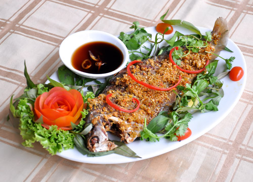

Cá thác lác chiên

- Khẩu phần 4
- Chuẩn bị 15 phút
- Thực hiện 15 phút
Nguyên liệu
- 400g cá thác lác nạo sẵn
- 1 củ hành tím, bằm nhuyễn
- 2 nhánh thì là, cắt nhỏ
- ½ muỗng cà phê Hạt nêm từ Thịt Thăn, Xương
Ống & Tủy - Bổ sung Vitamin A
- ⅛ muỗng cà phê tiêu xay (0.2g)
- ⅔ chén canh dầu ăn (75g)
Hướng dẫn thực hiện
- Ướp cá thác lác với hạt nêm, tiêu, thì là và hành tím.
- Quết cho cá thấm đều với gia vị
- Cán mỏng, tạo hình trước khi chiên
- Cho dầu ăn vào chảo, để sôi tim và chiên chả cá đến khi vàng đều là
được.
- Dùng nóng với cơm.